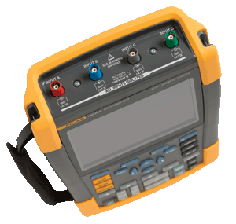

|

|
Die ersten Vier- und Zweikanal-Oszilloskope für Industrieumgebungen der Sicherheitsspezifikation CAT IV
Die neuen tragbaren Oszilloskope aus der ScopeMeter 190-Serie II sind die ersten 2- und 4-Kanal-Oszilloskope mit Sicherheitsspezifikation für den Einsatz in CAT III 1000 V/CAT IV 600 V-Umgebungen.
Diese Oszilloskope verbinden höchste Sicherheitsspezifikationen, Robustheit und Tragbarkeit mit dem hohen Leistungsvermögen eines Tischoszilloskops.
Beständigkeit unter schwersten industriellen Bedingungen
Diese ScopeMeter wurden eigens für Ingenieure und Monteure, die mit der Wartung von Industrieanlagen betraut sind, entwickelt. Derartige Oszilloskope werden unter schweren, schmutzigen und gefährlichen industriellen Bedingungen sowie zum Testen von mikroelektronischen bis hin zu leistungselektronischen Geräten eingesetzt.
Natürlich verfügen sie zudem über Plus TrendPlot™, Connect-and-View™-Triggering, ScopeRecord™ und alle anderen Produktmerkmale, die ein ScopeMeter® auszeichnen.
Überzeugen Sie sich selbst: Fordern Sie eine unverbindliche Produktdemonstration an! |
Merkmale eines ScopeMeter® aus der 190-Serie II:
- Zwei oder vier elektrisch isolierte Eingänge
- Wahl aus drei Modellen: 60, 100 oder 200 MHz Bandbreite
- Hohe Sample-Geschwindigkeit: Max. 2,5 GS/s mit einer Auflösung von max. 400 ps für eine optimale Registrierung von Rauschen und anderen Störungen
- Tiefer Speicher - bis 10.000 Messpunkte je Kanal, um auch kleinste Details der Wellenform zu kontrollieren
- Sicherheitsspezifikation CAT III 1000 V / CAT IV 600 V
- Schutzklasse IP-51 für Staub- und Tropfwasserdichtigkeit, für den Einsatz unter widrigen Bedingungen
- Eine einzige Batterieladung reicht für einen ganzen Arbeitstag aus: standardmäßig 7-stündige Verwendungsdauer, dank der neuen Li-ion-Technologie
- Isolierte USB-Buchsen für Anschluss an PC und Speicherung auf Speichergeräten Detaillierte Produktseite >>
|